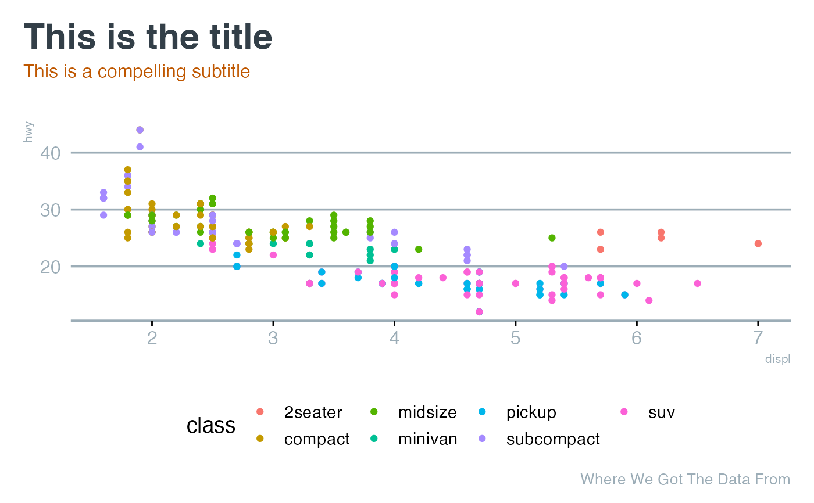

ggplot2 theme for use by me.
Usage
theme_mrw(
base_size = 14,
base_family = "",
title_size = 23,
subtitle_size = 12,
caption_size = 10,
legend_position = "none",
plot_title_position = "plot",
...
)Arguments
- base_size
the base size of text for the plot
- base_family
the base font used generally across plot text
- title_size
the text size for the plot title
- subtitle_size
the text size for the plot subtitle
- caption_size
the text size for the plot caption
- legend_position
where the legend should be placed
- plot_title_position
position of plot title (either "plot" or "panel")
- ...
Additional arguments passed to
ggplot2::theme_minimal()
Note
If planning to use "Figtree", you should download it from Google Fonts and use locally or use the showtext package.
Examples
library(mrworthingtonR)
library(ggplot2)
ggplot(mpg) +
aes(x = displ, y = hwy, colour = class) +
geom_point() +
theme_mrw(legend_position = "bottom") +
labs(title = "This is the title",
subtitle = "This is a compelling subtitle",
caption = "Where We Got The Data From")
